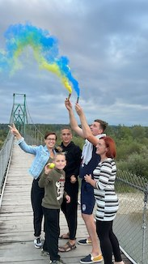
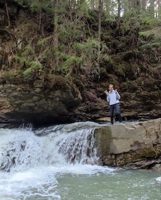
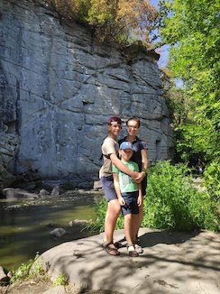
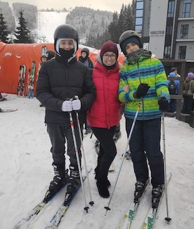
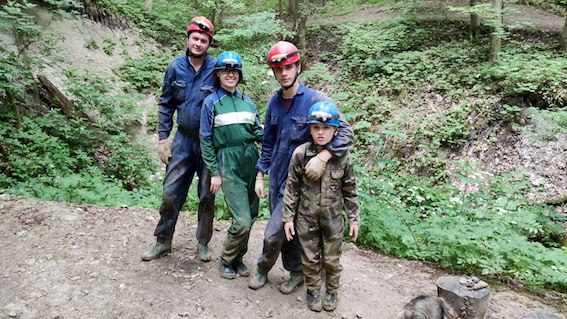

When you're a mom of two boys, you don't have enough time for hobbies. But our family has certain traditions built on our common interests. On vacations, holidays or just on weekends, we like to explore new places. We've been to the caves of Ternopil region, climbed mountains in the Carpathians, visited many historic small towns in Sumy region, and visited museums in Lviv and Kyiv. And before the war, we used to go to the seaside once a year, because the sea is love and complete relaxation.
    Since I'm afraid of any extreme activities (fast driving, air travel, cable cars, downhill skiing, scuba diving, high slides in a water park or on rides, diving far and deep in the sea, jumping from a height into the water, etc.), and all my boys love anything extreme, they always inspire me to fight my fears.
If you ask me what I love, I can say reading. I love to travel by train for a day (usually my trips from Kolomyia to Sumy take that long) and read non-stop. My literary preferences are quite diverse. These are fantasy and historical fiction, detective stories and science fiction, modern and classic. Unfortunately, I am the only one in my family who likes to read.